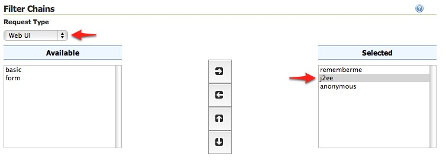
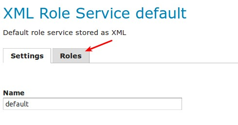
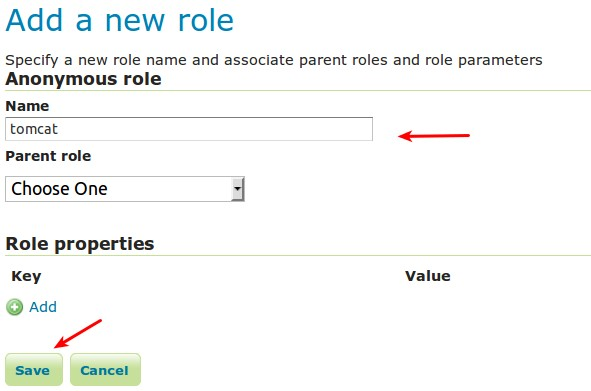

Configuring J2EE Authentication¶
Servlet containers such as Tomcat and Jetty offer their own options for authentication. Often it is desirable for an application such as GeoServer to use that existing authentication mechanisms rather than require its own authentication configuration.
J2EE authentication allows GeoServer to delegate to the servlet container for authentication. This tutorial walks through the process of setting up J2EE authentication.
Prerequisites¶
This tutorial requires a servlet container capable of doing its own authentication. This tutorial uses Tomcat.
Deploy GeoServer in tomcat before proceeding.
Configure the J2EE authentication filter¶
In order to delegate to the container for authentication a filter must first be configured to recognize the container authentication.
Login to the GeoServer web admin interface as the
adminuser.Click the
Authenticationlink located under theSecuritysection of the navigation sidebar.
Scroll down to the
Authentication Filterpanel and click theAdd newlink.Create a new filter named “j2ee” and fill out the settings form as follows:
Set the
Role serviceto “default”

Save
Back on the authentication page scroll down to the
Filter Chainspanel.Select “Web UI” from the
Request typedrop down.Select the
j2eefilter and position it after theanonymousfilter.Save.
Configure the role service¶
Since it is not possible to ask a J2EE container for the roles of a principal it is necessary to have all J2EE roles enlisted in a role service. The only J2EE API GeoServer can use is:
class: javax.servlet.http.HttpServletRequest
method: boolean isUserInRole(String role)
The idea is to query all roles from the role service and test each role with the “isUserInRole” method.
This tutorial assumes a user named “admin” with password “password” and a J2EE role named “tomcat”.
Click the
Users, Groups, and Roleslink located under theSecuritysection of the navigation sidebar.
Click on
defaultto work with the role service named “default”.
Click on the
Rolestab.Click on the
Add new rolelink.
Set the
Nameto “tomcat”
Save
Configure Tomcat for authentication¶
By default Tomcat does not require authentication for web applications. In this section Tomcat will be configured to secure GeoServer requiring a basic authentication login.
Shut down Tomcat.
Edit the
conf/tomcat-users.xmlunder the Tomcat root directory and add a user named “admin”:<user username="admin" password="password" roles="tomcat"/>
Edit the GeoServer
web.xmlfile located atwebapps/geoserver/WEB-INF/web.xmlunder the Tomcat root directory and add the following at the end of the file directly before the closing</web-app>element:<security-constraint> <web-resource-collection> <url-pattern>/*</url-pattern> <http-method>GET</http-method> <http-method>POST</http-method> </web-resource-collection> <auth-constraint> <role-name>tomcat</role-name> </auth-constraint> </security-constraint> <login-config> <auth-method>BASIC</auth-method> </login-config>
Save
web.xmland restart Tomcat.
Note
It is necessary to add all the role names specified in the web.xml to the
configured role service. This is duplicate work but there is currently no other solution.
Test J2EE login¶
Navigate to the GeoServer web admin interface. The result should be a prompt to authenticate.
Enter in the username “admin” and password “password”

The result should be the admin user logged into the GeoServer web admin.